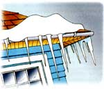

Find and fix this costly energy thief. By Joe Hurst-Wajszczuk
Icicles hanging along the eaves of a roof may be prettier than store-bought twinkle lights, but these sparkling natural beauties are a symptom of a major home ailment.
Icicles form when snow accumulates on the roof, melts and then refreezes at the roof's edge. This ice build-up is called "ice damming." Although the icicles themselves are harmless, the build-up prevents melting snow and ice from draining into gutters and off your roof. The blocked water can work under your roofing and into your home.
Once inside, water causes a host of problems you can and can't see. Some of the easiest problems to fix include gutters sagging from the weight of the ice, stained or Baggy ceilings, and loose roof shingles.
But the most serious problems are the ones you can't see. Water dampens and compresses wall and attic insulation, lowering R-values and increasing heating costs. Even small amounts of moisture feed nasty mold and mildew growths that can affect your health and lead to major structural damage in your house.
Even if you only get a few days of snow a year, you still need to watch out for ice dams. They can form from as little as 1 inch of snow, and once inside, the moisture can silently eat away at your home for years. Here are several ways you can protect your home from ice damming and address the symptoms, even in a blizzard:
Even if you only get a few feet of snow a year, you still need to watch out for ice dams.
PREVENTIVE MAINTENANCE
Ice clamming occurs because hot air from living spaces leaks into the roof space and melts the snow on the roof. The water then refreezes when it reaches the eaves, which tend to be colder than the roof because they hang over the edge. If the ice doesn't fall off the roof, the melting water will continue to build up. Therefore, the trick is to keep heat in and make sure the roof stays cold.
First, check for air leaks into the attic. Gaps and cracks in your insulation around vent stacks or electrical wiring can reduce your insulation's effectiveness by up to 30 percent. Fill gaps with loose fill or expanding foam insulation.
An uninsulated attic stairway or the opening from a whole house fan is like an open window, so buy or build removable insulation caps. Replace uninsulated ceiling (can) lights with those marked "IC" (the letters indicate the light is safe for direct insulation contact). Make sure kitchen and bathroom exhaust fans vent out the roof, not just into the attic.
Next, make sure your attic has adequate ventilation so any warm air reaching the attic space will escape before it melts roof snow. Clean existing gable or ridge vents of insulation or dust, and clear insulation from soffit vents so cool air can be drawn into the attic through the eaves. The recommended minimum ventilation is 1 square foot for every 150 square feet of attic floor area. Finished attics also must provide unobstructed cold-air channels to ensure the roof deck is not heated by thermal energy leaking out of the attic living space.
Finally, make sure gutters are empty of debris so melting water flows down and away from the house. If the above measures don't work, you can replace the first couple of shingle courses (rows) with an ice shield barrier. For new roofs, consider using a rubber membrane instead of felt along the edge of the roof.
FAST FIXES
During winter, if you notice snow melting off your roof faster than your neighbor's, you may need to deal immediately with ice damming. The goal is to remove standing snow. For one-story homes, a roof rake is the easiest way. If the dam is out of the rake's reach, you can use warm water to make channels through the ice dam. Work from the lower edge of the dam up, and remember the channel is only a temporary solution and will become ineffective within a few days. Installing roof heat tape along the lower 1 to 3 feet of the roof also will melt ice. It will add to your electric bill, too, but it's less expensive than letting water get into your home.
The only disadvantage is that you won't have sparkling icicles to look at after taking these measures. But, your roof will be in better shape.
Mother Earth News
|
 |
|
|